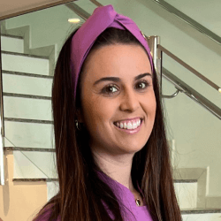
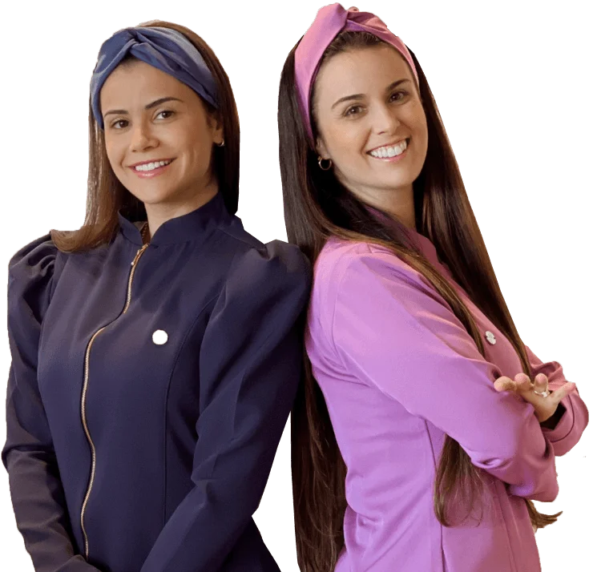
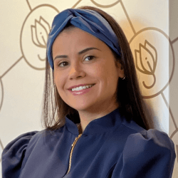

Dra. Karine Schell
Endodontia
- Graduação
- UNOPAR · 2004
- Especialização
- UNOPAR · 2007
- Mestrado
- UNICAMP · 2013
- Doutorado
- Endodontia · UNICAMP
- Experiência
- 17 anos
- Função
- Responsável técnica
Centro de Londrina · desde 2015
A Odontoclinic Londrina é a clínica das irmãs Schell. Karine, especialista, mestre e doutora em Endodontia pela UNICAMP. Karen, especialista em Ortodontia. À frente da clínica desde 2015, elas acompanham de perto cada paciente e cada tratamento.
As informações desta página refletem a formação, a experiência e a atuação direta das profissionais responsáveis pela clínica.
4,9 no Google · 548 avaliações
Dra. Karine Schell · Endodontia · Responsável Técnica
Dra. Karen Schell · Ortodontia

“Nesta clínica eu aprendi que carinho e competência podem sim andar juntas.”
2014
Ano em que a Schell Odontologia foi aberta. A clínica abriu as portas em 2015.
13.000
Canais finalizados pela Dra. Karine Schell.
3.000
Tratamentos ortodônticos concluídos pela Dra. Karen Schell.
4,9 · 548
Nota e número de avaliações no Google, em agosto de 2026.
Fonte: Google Meu Negócio · consultado em 26.08.2026
Avaliações públicas no Google
Nota 4,9 em 548 avaliações públicas no Google, com nome e data. O que os pacientes mais destacam: o carinho no atendimento, a clareza das explicações e a confiança que se constrói consulta após consulta.
“Nesta clínica eu aprendi que carinho e competência podem sim andar juntas.”
“Sou paciente há anos e sempre fui muito bem atendida. Transmite confiança, explica tudo com clareza e realmente se preocupa com o bem-estar dos pacientes. Recomendo de olhos fechados!”
“É visível o cuidado que vocês têm com cada paciente, tornando a experiência muito mais tranquila e agradável.”
“Profissionais excelentes que explicam tudo de uma maneira que conseguimos entender.”
“Além de excelentes profissionais, são super humanos. Local bem organizado e limpo.”
“Ótima clínica, sempre com bom atendimento e agilidade nos atendimentos, muito atenciosos com minha criança autista, obrigada pelo carinho.”
Google Meu Negócio · 548 avaliações · 4,9 · consultado em 26.08.2026
Implantes · diabetes e hipertensão
Pacientes com diabetes ou pressão alta encontram aqui um atendimento preparado para o seu caso. A avaliação considera exames, histórico e medicação em uso antes de qualquer decisão clínica — porque segurança se constrói no planejamento.
Quando necessário, o plano é elaborado em conjunto com o médico que acompanha você, para que cada etapa aconteça com tranquilidade.
Falar sobre meu caso01
Antes de agendar o procedimento, analisamos seus exames recentes e conversamos sobre a medicação em uso. Se algum exame adicional for necessário, orientamos exatamente qual.
02
Quem avalia é a profissional da área. Se o caso envolver outra especialidade, o encaminhamento acontece dentro da própria clínica — com o nome de quem vai atender.
03
O que precisa ser feito, em que ordem e o que esperar de cada etapa — por escrito, para você guardar e, se quiser, compartilhar com o seu médico.
04
Se o momento ainda não for o ideal para o implante, você recebe essa orientação com clareza — junto do caminho para chegar lá com segurança.
Dra. Karine Schell · Responsável Técnica
Os resultados variam de paciente para paciente. Cada tratamento depende de avaliação clínica individual.
Como funciona
Da avaliação ao orçamento, você sabe exatamente o que esperar: quem atende, como funciona cada etapa e quando o plano de tratamento chega às suas mãos.
Na chegada
Você conta o que está sentindo, a especialista examina e explica o que encontrou, com calma e em linguagem clara. Se for necessária uma radiografia, ela é solicitada nesse momento.
No mesmo dia
Você sai da avaliação sabendo o que é prioridade, o que pode ser planejado com calma e o que não precisa de intervenção.
Depois da avaliação
Vem por escrito, com cada item detalhado. Como o orçamento reflete as necessidades identificadas na avaliação, ele é entregue logo depois dela — completo e sem surpresas.
Quando você decidir
É sua, no seu tempo. Com todas as informações em mãos, você pode avaliar o plano com tranquilidade e decidir o melhor momento para começar.
Do agendamento ao acompanhamento, a recepção mantém você informado sobre horários, confirmações e próximos passos.
Tratamentos
Conheça os tratamentos disponíveis na Odontoclinic Londrina e fale diretamente com nossa equipe sobre o atendimento que você procura.
Endodontia
Conduzido pela Dra. Karine Schell — especialista, mestre e doutora em Endodontia pela UNICAMP, com mais de 13 mil tratamentos concluídos.
Falar sobre canalOrtodontia
Aparelho fixo ou autoligado, com indicação individualizada da Dra. Karen Schell — especialista pela Dental Press, com mais de 3 mil tratamentos concluídos.
Falar sobre aparelhoOrtodontia
Alinhadores transparentes com planejamento individualizado, a partir da avaliação clínica e da documentação ortodôntica de cada paciente.
Falar sobre alinhadoresImplantodontia
Reposição de dentes com planejamento individualizado — da avaliação inicial ao acompanhamento de cada etapa do tratamento.
Falar sobre implantesEstética
Lâminas finas aplicadas sobre os dentes para harmonizar forma e cor, com planejamento personalizado do sorriso.
Falar sobre lentesHarmonização
Aplicação com indicação odontológica criteriosa — inclusive em casos de bruxismo, quando clinicamente indicada.
Falar sobre toxina botulínicaEstética
Clareamento dental com acompanhamento profissional e orientação completa antes, durante e depois do tratamento.
Falar sobre clareamentoReabilitação
Soluções fixas e removíveis para devolver função e estética, planejadas conforme as necessidades de cada paciente.
Falar sobre prótesesCirurgia
Avaliação com exames de imagem e planejamento cuidadoso, para um procedimento seguro e bem acompanhado.
Falar sobre sisoOdontopediatria
Atendimento que respeita o tempo de cada criança, com acolhimento e comunicação próxima com os responsáveis.
Falar sobre odontopediatriaDentística
Recuperação de dentes comprometidos com atenção à estética, à função e ao conforto de cada paciente.
Falar sobre restauraçõesAvaliação
Consultas de rotina, prevenção e diagnóstico — o ponto de partida para cuidar da saúde do seu sorriso.
Agendar uma avaliaçãoResponsável técnica: Dra. Karine Schell · Schell Odontologia LTDA · CNPJ 21.053.516/0001-74 · CRO-PR 2995
Quem assina
A Schell Odontologia foi fundada em setembro de 2014 e a Odontoclinic Londrina abriu as portas em 2015. À frente da clínica estão as duas fundadoras — que também são as especialistas que atendem, presentes na rotina clínica e no cuidado com cada paciente.

Endodontia

Ortodontia
Irmãs, dentistas e empresárias, Karine e Karen construíram a Odontoclinic com um propósito em comum: unir excelência técnica, cuidado e uma relação próxima com cada paciente.
Onde e quando
Plus code MRCR+CX
Schell Odontologia LTDA · CNPJ 21.053.516/0001-74 · CRO-PR 2995
Dúvidas
Cada atendimento começa com uma avaliação individual e com a explicação do que será feito. A anestesia é utilizada sempre que indicada, e a equipe acompanha você em cada etapa, no seu ritmo. Se quiser, conte na hora de marcar como prefere ser atendido — o cuidado é organizado em torno de você.
Os valores variam conforme as necessidades identificadas na avaliação. Depois da consulta, você recebe um orçamento por escrito, claro e detalhado, com os procedimentos indicados para o seu caso.
A disponibilidade pode variar conforme o convênio. Nossa equipe confirma pelo WhatsApp se o seu plano é atendido atualmente.
A Endodontia (tratamento de canal) é conduzida pela Dra. Karine Schell e a Ortodontia pela Dra. Karen Schell. As demais especialidades ficam com os profissionais correspondentes da equipe. Se a avaliação indicar outra área, o encaminhamento acontece dentro da própria clínica, com o nome de quem vai atender.
A possibilidade de realizar o implante depende de uma avaliação clínica individual. Traga seus exames recentes e a lista dos medicamentos em uso: com essas informações, a especialista analisa o seu quadro e apresenta um planejamento seguro — incluindo, quando necessário, as etapas que precisam acontecer antes do procedimento.
Com acolhimento e respeito ao tempo de cada criança. Avise na hora de marcar se é a primeira consulta: o atendimento é organizado com mais tempo, e os responsáveis acompanham cada etapa.
Sim, das 8h às 12h. De segunda a sexta, das 9h às 19h.
O tempo varia conforme o procedimento e as características de cada caso. Um tratamento de canal costuma ser concluído em poucas sessões; um tratamento ortodôntico é acompanhado ao longo de meses. Após a avaliação, você recebe uma estimativa para o seu caso.
Preencha os dados abaixo e nós preparamos a sua mensagem para o WhatsApp. Você revisa tudo antes de enviar.